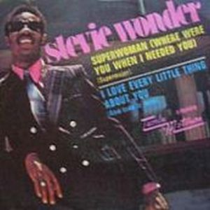
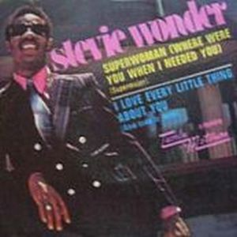

Stevie Wonder, con un nuevo contrato discográfico con la Motown donde consigue plena libertad creativa y artística, comienza un periodo de discos llamados a revolucionar el concepto de la música. Con una estructura de LP actual, Music Of My Mind contiene un sonido más sofisticado, empleando sonidos producidos por sintetizadores mezclándolos con maestría.
En su interior un conjunto de bellas canciones y armoniosas melodias, donde sus ambiciones musicales crecientes, hacen que los temas sean más largos y el género más variado. Cuenta tambien con el principio de una colaboración que se prolongará en el tiempo. Ni más ni menos que
TONTO's Expanding Head Band ( Robert Margouleff y Malcolm Cecil), pioneros en la utilización de instrumentos electrónicos
(sintetizadores).
 
